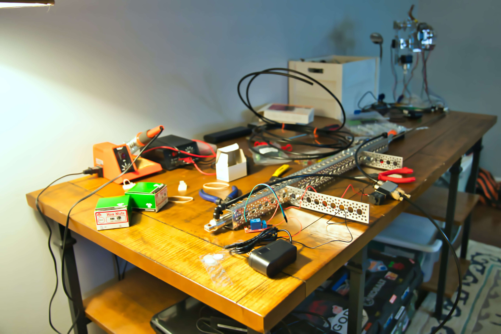
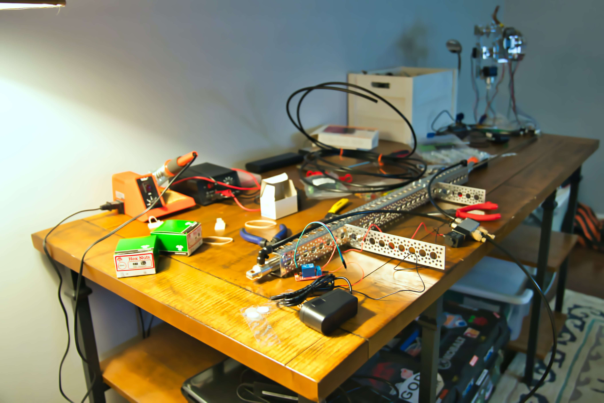

Internet de las cosas
El Internet de las cosas (IoT), lo cambiará todo, incluso a nosotros mismos. El Internet de las cosas es una de las creaciones más importantes y poderosas de toda la historia debido al impacto que tiene en educación, la comunicación, las empresas, la ciencia, el gobierno y, en general de la humanidad. Ahora debemos considerar que IoT representa la próxima evolución de Internet, que es un enorme salto en su capacidad para reunir, analizar y distribuir datos que podemos convertir en información, conocimiento y, en última instancia, sabiduría. En este contexto, IoT se vuelve inmensamente importante.
El IoT permite que podamos integrar objetos inteligentes de todo tipo y función, redes de sensores, y recursos del Internet actual con las personas con el fin de compartir información que sea útil para aumentar nuestro conocimiento y tomar decisiones que mejoren nuestra calidad de vida en cualquier aspecto posible: social, económico, cultural, ambiental, etc.
¿Qué es Arduino y NodeMCU?
Estas son una plataforma de desarrollo basada en una placa electrónica de hardware libre que incorpora un microcontrolador re-programable y una serie de pines. Estos permiten establecer conexiones entre el microcontrolador y los diferentes sensores y actuadores de una manera muy sencilla. Estas son placas de desarrollo totalmente abierta, a nivel de software y de hardware. En NodeMCU al igual que Arduino, todo está dispuesto para facilitar la programación de un microcontrolador o MCU (del inglés Microcontroller Unit).
¿Qué es Arduino y NodeMCU?
- Cuenta con un lenguaje de programación de fácil compresión basado en C++.
- Es de bajo costo. Incluso uno mismo la podría construir.
- Es reutilizable y tiene gran versatilidad, ya que una vez terminado el proyecto es muy fácil poder desmontar los componentes externos a la placa y empezar con un nuevo proyecto.
- Es parte de una gran comunidad: Gracias a su gran alcance hay una gran comunidad trabajando con esta plataforma.
- Su entorno de programación es multiplataforma, por lo que se puede instalar y ejecutar en sistemas operativos como Windows, Mac OS y Linux.
- Existe una amplia gama de herramientas que facilitan la implementación del IoT.
Descripción del curso
En este curso aprenderás sobre un asunto que está cada vez más presente en nuestras vidas: Internet de las Cosas. Entenderás qué es y cómo funciona, descubriendo algunas de sus aplicaciones que ya forman parte de nuestro día a día, y conociendo tendencias en el área. Diseñarás soluciones para problemas reales y te familiarizarás con las tecnologías que posibilitan el desarrollo de aplicaciones en esta área. Se utilizará como herramienta el micro controlador NodeMCU, un micro controlador de bajo precio, inspirado en Arduino, compatible con su lenguaje de programación y que usa un módulo ESP8266 para conectarse a Internet vía WiFi. Se manejará como si fuera un Arduino.
 

Lo que se va a aprender
- Entender cómo funciona Internet.
- Descubrir qué es Internet de las Cosas y algunas de sus aplicaciones que ya forman parte de nuestro día a día.
- Aprender conceptos y conocer tendencias en Internet de las Cosas.
- Identificar problemas e imaginar soluciones que pueden ser desarrolladas utilizando tecnologías de Internet de las Cosas.
- Conocer herramientas para el desarrollo de soluciones relacionadas con el IoT.
Modalidad del curso
El curso se imparte mediante CLASES EN VIVO con un Maestro en Ciencias con el que podrás dialogar, hacer consultas, comentar y sugerir en un aula virtual como si estuvieran frente a frente. En cada clase se fomenta la continua participación de los asistentes, esto mediante comunicación a través de un chat, micrófono y cámara de cada participante, compartir pantalla, entre muchas formas más; esto con la finalidad de observar lo que se esta desarrollando en el momento y asegurar una adecuado aprendizaje.
Además de la clases, creamos un grupo de Whatsapp o Telagram en el que podrás hacer consultas en cualquier momento, subir prácticos vídeos de los ejercicios o circuitos propuestos, etc.
Cada clase será grabada, para que puedan ver las grabaciones por si no pudieron asistir a alguna clase o repasen lo que se vio anteriormente.
Horario
El curso inicia el día 31 de mayo.
Se tendra un horario de 13:30hr a 14:30hr (zona horaria de la Ciudad de México).
Las clases serán tres días a la semana, los lunes, miércoles y viernes.
Este contará con 24 clases.
No necesitas conocimientos previos.
Modalidad 100% online.
Las inscripciones inician a partir del día 17 de mayo
Temario
- ¿Qué es el Internet de las Cosas?
- ¿Qué es el Internet de las Cosas?
- Historia del Internet de las cosas
- Áreas de Aplicación
- Introducción a Placas de desarrollo (Arduino y NodeMCU)
- ¿Qué es Arduino?
- Historia de Arduino
- ¿Por qué usar Arduino?
- Tipos de placas Arduino
- Partes del Arduino UNO
- ¿Qué es NodeMCU?
- Historia de NodeMCU
- ¿Por qué usar NodeMCU?
- Tipos de placas NodeMCU
- Partes del NodeMCU esp8266
- Electrónica
- Conceptos teóricos sobre electricidad
- Circuitos Eléctricos Básicos
- Diversos componentes eléctrico
- Repaso de a la Programación de las placas (Arduino y NodeMCU)
- ¿Dónde se escribe el código?
- Estructura de un programa
- Lenguaje
- Instrucciones de control en la programación
- Diferencias entre IDE y editor de textos
- Las pacas de desarrollo y el internet
- ¿Cómo conectar las placas al internet?
- ¿Cómo controlar sensores y actuadores via remota?
- Descripción de diferentes sensores y actuadores
- Sensor ultrasónico
- Sensores de sonido (Piezo)
- LDR fotorresitencia
- Servomotor
- Sensores de temperatura
- Circuitos integrados (puente H)
- Otras Herramientas para implementar el Internet de las cosas
- Blynk
- UBIDOTS
- ThingsBoard
- Firebase
- Proyectos a desarrollar
- Pequeño Robot
- Control de invernadero
- Proyecto propuesto por el grupo